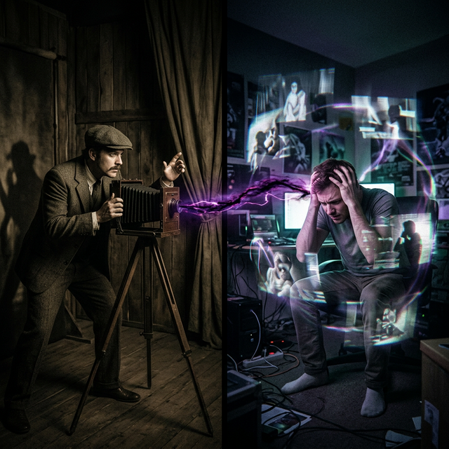

Sombras de la Mente Shadows of the Mind Ombre della mente 心灵的阴影 ظلال العقل Тени разума Schatten des Geistes Les ombres de l'esprit 心の影 Sombras da Mente
La distorsión de la belleza y la locura corporal. Distortion of beauty and physical madness. La distorsione della bellezza e la follia corporea. 美的扭曲和身体的疯狂。 تشويه الجمال والجنون الجسدي. Искажение красоты и телесное безумие. Die Verzerrung von Schönheit und körperlichem Wahnsinn. La distorsion de la beauté et la folie corporelle. 美の歪みと肉体の狂気。 A distorção da beleza e da loucura corporal.
Tuan se dedicó a producir grabados que degradaban la forma humana, inyectando un veneno de insatisfacción en la mente colectiva. Esa energía de desequilibrio sembró una Causa de oscuridad psíquica. Hoy ese mismo espíritu habita en un hombre perseguido por fantasmas invisibles.
Tuan dedicated himself to producing prints that degraded the human form, injecting a poison of dissatisfaction into the collective mind. That energy of imbalance sowed a Cause of psychic darkness. Today that same spirit dwells in a man haunted by invisible ghosts.
"Lo que usas para emborrachar la mente ajena termina siendo tu propia prisión mental."
"What you use to intoxicate the minds of others ends up being your own mental prison."
Las Sombras y la Luz
Shadows and Light
Ombre e Luce
阴影与光
الظلال والضوء
Тени и свет
Schatten und Licht
Ombres et Lumière
影と光
Sombras e Luz
Había un hombre de palabras oscuras y pensamientos envidiosos. Disfrutaba susurrando mentiras y sembrando dudas, manchando la paz mental de cada persona que cruzaba en su camino. Se reía al ver a los demás confundidos y tristes...
Pero las sombras que creamos nunca nos abandonan del todo; nos esperan pacientemente. Y así, él acabó atrapado en una celda que no tenía rejas, sino terribles angustias y miedos invisibles. Su mente se llenó de un ruido ensordecedor que no lo dejaba dormir.
Eran todos los suspiros de desesperanza que él mismo había provocado, regresando a su origen. Sin embargo, en medio del tormento oscuro, el cielo le dejó una pequeña rendija... para que cuando por fin anhelara la luz pura con toda su alma, aprendiera el inmenso valor de la paz, y pudiera renacer para calmar la mente de los demás.
There was a man of dark words and envious thoughts. He enjoyed whispering lies and sowing doubts, staining the peace of mind of every person who crossed his path. He laughed when he saw the others confused and sad...
But the shadows we create never completely leave us; They wait for us patiently. And so, he ended up trapped in a cell that had no bars, but terrible anguish and invisible fears. His mind was filled with a deafening noise that kept him from sleeping.
They were all the sighs of hopelessness that he himself had caused, returning to their origin. However, in the midst of the dark torment, the sky left him a small crack... so that when he finally longed for pure light with all his soul, he would learn the immense value of peace, and could be reborn to calm the minds of others.
C'era un uomo dalle parole oscure e dai pensieri invidiosi. Si divertiva a sussurrare bugie e seminare dubbi, macchiando la tranquillità di ogni persona che incrociava il suo cammino. Rise quando vide gli altri confusi e tristi...
Ma le ombre che creiamo non ci abbandonano mai del tutto; Ci aspettano pazientemente. E così finì intrappolato in una cella senza sbarre, ma con angosce terribili e paure invisibili. La sua mente era piena di un rumore assordante che gli impediva di dormire.
Erano tutti i sospiri di disperazione che lui stesso aveva causato, tornando alla loro origine. Tuttavia, nel mezzo dell'oscuro tormento, il cielo gli lasciò una piccola crepa... così che quando finalmente desiderò la luce pura con tutta la sua anima, imparò l'immenso valore della pace e poté rinascere per calmare le menti degli altri.
有一个言语阴暗、思想嫉妒的人。他喜欢低声说谎，散布怀疑，玷污了每一个遇到他的人的内心平静。当他看到其他人困惑和悲伤时，他笑了......
但我们创造的阴影永远不会完全离开我们；他们耐心地等待我们。于是，他最终被困在了一间没有铁栏杆的牢房里，却充满了可怕的痛苦和无形的恐惧。他的脑子里充满了震耳欲聋的噪音，让他无法入睡。
都是他自己造成的绝望叹息，又回到了原点。然而，在黑暗的煎熬中，天空给他留下了一道小小的裂缝……以便当他最终全心向往纯粹的光明时，他会懂得平静的巨大价值，并能重生安抚他人的心灵。
كان هناك رجل ذو كلام سوداوي وأفكار حاسدة. كان يستمتع بالهمس بالأكاذيب وزرع الشكوك، مما يلطخ راحة البال لكل من يعبر طريقه. ضحك عندما رأى الآخرين في حيرة وحزن..
لكن الظلال التي نخلقها لا تتركنا تمامًا؛ إنهم ينتظروننا بصبر. وهكذا، انتهى به الأمر محاصرًا في زنزانة ليس بها قضبان، ولكن معاناة رهيبة ومخاوف غير مرئية. كان عقله مليئًا بالضجيج الذي يصم الآذان ويمنعه من النوم.
لقد كانت جميعها تنهدات اليأس التي سببها هو نفسه عندما عاد إلى أصله. ومع ذلك، في وسط العذاب المظلم، تركته السماء صدعًا صغيرًا... حتى أنه عندما اشتاق أخيرًا إلى النور النقي بكل روحه، سيتعلم القيمة الهائلة للسلام، ويمكن أن يولد من جديد لتهدئة عقول الآخرين.
Был человек темных слов и завистливых мыслей. Ему нравилось нашептывать ложь и сеять сомнения, пятная душевное спокойствие каждого человека, попадавшегося ему на пути. Он засмеялся, когда увидел, что остальные растеряны и грустны...
Но тени, которые мы создаем, никогда полностью не покидают нас; Они терпеливо ждут нас. И вот он оказался в ловушке в камере, где не было решетки, но были страшные муки и невидимые страхи. Его разум был наполнен оглушительным шумом, который не давал ему спать.
Все это были вздохи безнадежности, которые он сам вызвал, возвращаясь к своему истоку. Однако посреди темных мучений небо оставило ему небольшую трещину... чтобы, когда он, наконец, всей душой возжелал чистого света, он познал огромную ценность мира и смог возродиться, чтобы успокоить умы других.
Es gab einen Mann mit dunklen Worten und neidischen Gedanken. Er genoss es, Lügen zu flüstern und Zweifel zu säen, wodurch er den Seelenfrieden aller Menschen beeinträchtigte, die seinen Weg kreuzten. Er lachte, als er die anderen verwirrt und traurig sah ...
Aber die Schatten, die wir erzeugen, verlassen uns nie ganz; Sie warten geduldig auf uns. Und so landete er schließlich in einer Zelle ohne Gitter, in der es schreckliche Qualen und unsichtbare Ängste gab. Sein Kopf war von einem ohrenbetäubenden Lärm erfüllt, der ihn am Schlafen hinderte.
Es waren alles Seufzer der Hoffnungslosigkeit, die er selbst verursacht hatte und die zu ihrem Ursprung zurückkehrten. Doch mitten in der dunklen Qual hinterließ der Himmel einen kleinen Spalt in ihm ... als er sich schließlich mit ganzer Seele nach reinem Licht sehnte, lernte er den immensen Wert des Friedens kennen und konnte wiedergeboren werden, um die Gedanken anderer zu beruhigen.
C’était un homme aux paroles sombres et aux pensées envieuses. Il aimait chuchoter des mensonges et semer le doute, entachant ainsi la tranquillité d'esprit de chaque personne qui croisait son chemin. Il rit en voyant les autres confus et tristes...
Mais les ombres que nous créons ne nous quittent jamais complètement ; Ils nous attendent patiemment. Et ainsi, il s’est retrouvé enfermé dans une cellule sans barreaux, mais avec une angoisse terrible et des peurs invisibles. Son esprit était rempli d'un bruit assourdissant qui l'empêchait de dormir.
C'étaient tous des soupirs de désespoir qu'il avait lui-même provoqués, revenant à leur origine. Cependant, au milieu des sombres tourments, le ciel lui a laissé une petite fissure... afin que lorsqu'il aspirera enfin à la lumière pure de toute son âme, il apprenne l'immense valeur de la paix et puisse renaître pour calmer l'esprit des autres.
暗い言葉と妬みを持った男がいた。彼は嘘をささやき、疑いを植え付けることを楽しんでおり、彼の道を横切るすべての人々の心の平穏を汚しました。他の人たちが混乱して悲しんでいるのを見て、彼は笑った...
しかし、私たちが作り出す影は私たちから完全に離れることはありません。彼らは辛抱強く私たちを待っています。そして、彼は鉄格子のない独房に閉じ込められることになったが、ひどい苦痛と目に見えない恐怖があった。彼の心は耳をつんざくような騒音で満たされ、眠れなくなった。
それらは全て彼自身が引き起こした原点回帰の絶望のため息だった。しかし、暗闇の苦しみの真っ只中に、空は彼に小さな亀裂を残しました...彼がついに全身全霊で純粋な光を望んだとき、彼は平和の計り知れない価値を学び、他の人の心を落ち着かせるために生まれ変わることができるでしょう。
Havia um homem de palavras sombrias e pensamentos invejosos. Ele gostava de sussurrar mentiras e semear dúvidas, manchando a paz de espírito de cada pessoa que cruzava seu caminho. Ele riu ao ver os outros confusos e tristes...
Mas as sombras que criamos nunca nos abandonam completamente; Eles esperam por nós pacientemente. E assim, acabou preso em uma cela que não tinha grades, mas sim uma angústia terrível e medos invisíveis. Sua mente estava cheia de um barulho ensurdecedor que o impedia de dormir.
Eram todos os suspiros de desesperança que ele mesmo causou, voltando à origem. Porém, em meio ao tormento sombrio, o céu deixou-lhe uma pequena fenda... para que quando finalmente ansiasse pela luz pura com toda a sua alma, aprendesse o imenso valor da paz, e pudesse renascer para acalmar a mente dos outros.

La Inspiración Original
The Original Inspiration
L'Ispirazione Originale
最初的灵感
الإلهام الأصلي
Оригинальное вдохновение
Die Ursprüngliche Inspiration
L'Inspiration Originale
元のインスピレーション
A Inspiração Original
La historia que hemos relatado en este capítulo está inspirada por el pasaje de la escena original de los murales «Tranh Nhân Quả» (Ilustraciones del Karma) del Templo Linh Ung en Da Nang, capturado en la imagen.
La storia che abbiamo raccontato in questo capitolo è ispirata al passaggio della scena originale dei murali “Tranh Nhân Quả” (Illustrazioni del Karma) del Tempio Linh Ung a Da Nang, catturati nell'immagine.
我们在本章中讲述的故事的灵感来自图像中捕获的岘港灵应寺“Tranh Nhân Quả”（业力插图）壁画的原始场景。
القصة التي رويناها في هذا الفصل مستوحاة من مقطع من المشهد الأصلي لجداريات "ترانه نهان كو" (الرسوم التوضيحية للكارما) لمعبد لينه أونغ في دا نانغ، الملتقطة في الصورة.
История, которую мы рассказали в этой главе, вдохновлена отрывком из оригинальной сцены фрески «Тран Нхан Ку» («Иллюстрации кармы») храма Линь Унг в Дананге, запечатленной на изображении.
Die Geschichte, die wir in diesem Kapitel erzählt haben, ist inspiriert von der Passage aus der Originalszene der Wandgemälde „Tranh Nhân Quả“ (Illustrationen von Karma) des Linh Ung-Tempels in Da Nang, die im Bild festgehalten ist.
L'histoire que nous avons racontée dans ce chapitre est inspirée du passage de la scène originale des peintures murales « Tranh Nhân Quả » (Illustrations du Karma) du temple Linh Ung à Da Nang, capturées dans l'image.
この章で私たちが語った物語は、ダナンのリンウン寺院の壁画「Tranh Nhân Quả」（カルマの図）の元のシーンの一節からインスピレーションを得て、画像に収められています。
A história que contamos neste capítulo é inspirada na passagem da cena original dos murais “Tranh Nhân Quả” (Ilustrações do Karma) do Templo Linh Ung em Da Nang, capturada na imagem.
The story we have related in this chapter is inspired by the passage from the original scene of the "Tranh Nhân Quả" (Karma Illustrations) murals at the Linh Ung Temple in Da Nang, captured in the image.
Como se puede apreciar en el pasaje extraído del mural, la causa y su efecto kármico están descritos originalmente en vietnamita y con una breve traducción al inglés. A continuación, te ofrecemos la traducción y el análisis en tu idioma:
As can be seen in the passage extracted from the mural, the cause and its karmic effect are originally described in Vietnamese with a brief English translation. Below, we offer the translation and analysis in your language:
Come si può vedere nel brano tratto dal murale, la causa e il suo effetto karmico sono originariamente descritti in vietnamita e con una breve traduzione in inglese. Di seguito offriamo la traduzione e l'analisi nella tua lingua:
从壁画的段落中可以看出，因果及其业果最初是用越南语描述的，并有简短的英文翻译。下面我们提供您的语言的翻译和分析：
وكما يتبين من المقطع المأخوذ من اللوحة الجدارية، فإن السبب وتأثيره الكارمي موصوفان في الأصل باللغة الفيتنامية مع ترجمة مختصرة إلى الإنجليزية. نقدم أدناه الترجمة والتحليل بلغتك:
Как видно из отрывка, взятого из фрески, причина и ее кармическое следствие изначально описаны на вьетнамском языке и с кратким переводом на английский язык. Ниже мы предлагаем перевод и анализ на ваш язык:
Wie aus der Passage aus dem Wandgemälde hervorgeht, werden die Ursache und ihre karmische Wirkung ursprünglich auf Vietnamesisch und mit einer kurzen Übersetzung ins Englische beschrieben. Nachfolgend bieten wir die Übersetzung und Analyse in Ihrer Sprache an:
Comme on peut le voir dans le passage tiré de la peinture murale, la cause et son effet karmique sont initialement décrits en vietnamien et avec une brève traduction en anglais. Ci-dessous, nous proposons la traduction et l’analyse dans votre langue :
壁画の一節からわかるように、原因とそのカルマ的影響はもともとベトナム語で説明されており、英語への簡単な翻訳が付けられています。以下にあなたの言語での翻訳と分析を提供します。
Como pode ser visto no trecho retirado do mural, a causa e seu efeito cármico são originalmente descritos em vietnamita e com uma breve tradução para o inglês. Abaixo oferecemos a tradução e análise em seu idioma:
🇻🇳 Tiếng Việt:
Nhân: Thương làm phim viết sách đồi trụy.
Quả: Điên loạn,
khổ đau, gia đình đổ vỡ.
🇬🇧 English Translation:
Cause:
Producing pornographic books, movies.
Effect: Brings mental illness, misery, and a broken family.
Traducción Recreada:
Causa: Producir libros, películas morbosas u obscenas
contaminando a la sociedad.
Efecto: Atrae severa enfermedad mental, histeria, miseria y familia
destruida.
Recreated Translation:
Cause: Producing morbid or obscene books, films,
contaminating society.
Effect: Attracts severe mental illness, hysteria, misery and destroyed
family.
Traduzione ricreata:
Causa: produrre libri e film morbosi o osceni, contaminare
la società.
Effetto: attira gravi malattie mentali, isteria, miseria e famiglia distrutta.
重新翻译：
原因：制作病态或淫秽的书籍、电影，污染社会。
效果：引起严重的精神疾病、歇斯底里、痛苦和家庭破裂。
إعادة إنشاء الترجمة:
السبب: إنتاج كتب وأفلام سيئة أو فاحشة، وتلويث
المجتمع.
التأثير: يجذب الأمراض العقلية الشديدة والهستيريا والبؤس وتدمير الأسرة.
Воссозданный перевод:
Причина: Создание болезненных или непристойных книг,
фильмов, засоряющих общество.
Следствие: Привлекает тяжелые психические заболевания, истерию,
страдания и разрушение семьи.
Nachgebildete Übersetzung:
Ursache: Produktion krankhafter oder obszöner Bücher
und Filme, Verunreinigung der Gesellschaft.
Wirkung: Zieht schwere Geisteskrankheiten, Hysterie,
Elend und zerstörte Familien an.
Traduction recréée :
Cause : produire des livres et des films morbides ou
obscènes, contaminer la société.
Effet : attirer de graves maladies mentales, l'hystérie, la
misère et la famille détruite.
再作成された翻訳:
原因: 病的または猥褻な本、映画を制作し、社会を汚染する。
結果: 重度の精神疾患、ヒステリー、悲惨さ、崩壊した家族を引き寄せる。
Tradução recriada:
Causa: Produzir livros e filmes mórbidos ou obscenos,
contaminar a sociedade.
Efeito: Atrai doenças mentais graves, histeria, miséria e família
destruída.
Análisis: Volcar inmundicia, vulgaridad y oscuridad en el estanque diáfano del pensamiento colectivo es un sabotaje contra el avance puro de la consciencia humana. Semejante nube negra de desesperanza no se dispersa sino que, debido al efecto bumerán perfecto del karma, vuelve para hospedarse densamente como esquizofrenias latentes y severos tormentos paralizantes en los pasadizos de nuestra propia psiquis.
Analysis: Dumping filth, vulgarity and darkness into the clear pool of collective thought is a sabotage against the pure advancement of human consciousness. Such a black cloud of hopelessness does not disperse but, due to the perfect boomerang effect of karma, returns to lodge densely as latent schizophrenia and severe paralyzing torments in the passageways of our own psyche.
Analisi: Scaricare la sporcizia, la volgarità e l'oscurità nella limpida pozza del pensiero collettivo è un sabotaggio contro il puro progresso della coscienza umana. Questa nuvola nera di disperazione non si disperde ma, a causa del perfetto effetto boomerang del karma, ritorna ad albergare densamente come schizofrenia latente e gravi tormenti paralizzanti nei corridoi della nostra psiche.
分析：将污秽、粗俗和黑暗倒入集体思想的清澈池中，是对人类意识纯粹进步的破坏。这种绝望的乌云并没有消散，而是由于业力完美的回旋镖效应，又以潜在的精神分裂症和严重瘫痪的折磨的形式重新密集地停留在我们自己的心灵通道中。
التحليل: إن إلقاء القذارة والابتذال والظلام في مجموعة الفكر الجماعي الواضحة يعد بمثابة تخريب للتقدم الخالص للوعي الإنساني. مثل هذه السحابة السوداء من اليأس لا تتبدد، ولكن، بسبب التأثير المرتد المثالي للكارما، تعود لتستقر بكثافة مثل الفصام الكامن والعذاب الشديد المشلول في ممرات نفسيتنا.
Анализ: Сбрасывание грязи, пошлости и тьмы в чистый бассейн коллективной мысли – это саботаж против чистого развития человеческого сознания. Такое черное облако безнадежности не рассеивается, а благодаря совершенному бумеранговому эффекту кармы возвращается, чтобы плотно обосноваться в виде скрытой шизофрении и тяжелых парализующих мучений в проходах нашей собственной психики.
Analyse: Dreck, Vulgarität und Dunkelheit in den klaren Pool des kollektiven Denkens zu werfen, ist eine Sabotage gegen die reine Weiterentwicklung des menschlichen Bewusstseins. Solch eine schwarze Wolke der Hoffnungslosigkeit löst sich nicht auf, sondern kehrt aufgrund des perfekten Bumerangeffekts des Karma zurück, um sich als latente Schizophrenie und schwere lähmende Qualen dicht in den Gängen unserer eigenen Psyche festzusetzen.
Analyse : Déverser des saletés, de la vulgarité et des ténèbres dans le bassin clair de la pensée collective est un sabotage contre le pur progrès de la conscience humaine. Un tel nuage noir de désespoir ne se disperse pas mais, grâce au parfait effet boomerang du karma, revient se loger de manière dense sous forme de schizophrénie latente et de graves tourments paralysants dans les passages de notre propre psyché.
分析: 集合的思考の透明なプールに汚物、下品さ、暗闇を放り込むことは、人間の意識の純粋な進歩に対する妨害行為です。このような絶望の黒い雲は消えることはなく、カルマの完全なブーメラン効果により、私たち自身の精神の通路に潜在的な統合失調症と重度の麻痺の苦痛として密集して戻ってきます。
Análise: Despejar sujeira, vulgaridade e escuridão no poço claro do pensamento coletivo é uma sabotagem contra o puro avanço da consciência humana. Essa nuvem negra de desesperança não se dispersa, mas, devido ao perfeito efeito bumerangue do carma, volta a alojar-se densamente como esquizofrenia latente e severos tormentos paralisantes nas passagens de nossa própria psique.
Si quieres conocer más sobre el proyecto y colaborar, accede a nuestro Linktree.
If you want to know more about the project and collaborate, access our Linktree.
Se vuoi saperne di più sul progetto e collaborare, accedi al nostro Linktree.
如果您想了解有关该项目和协作的更多信息，请访问我们的 Linktree.
إذا كنت تريد معرفة المزيد عن المشروع والتعاون، قم بالوصول إلى موقعنا Linktree.
Если вы хотите узнать больше о проекте и сотрудничать, посетите наш Linktree.
Wenn Sie mehr über das Projekt erfahren und zusammenarbeiten möchten, besuchen Sie unsere Linktree.
Si vous souhaitez en savoir plus sur le projet et collaborer, accédez à notre Linktree.
プロジェクトについてさらに詳しく知り、共同作業をしたい場合は、次のサイトにアクセスしてください。 Linktree.
Se quiser saber mais sobre o projeto e colaborar, acesse nosso Linktree.